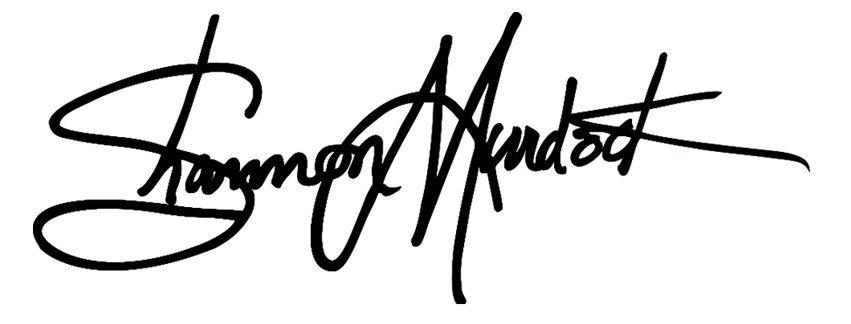

Monte Faison II
IT112 - Web Development with Python
IT112 1OL 29432
Spring 2025
Seattle Central College
Hi Monte,
I hope you’re doing well.
I wanted to follow up to confirm my completion status for the IT112 assignments. I’ve included a table below listing the assignments I’ve submitted, their current grading status, and any outstanding points.
Notably, while the “Setting Up A Flask Environment - VS Code” assignment was not configured for submission on Canvas, I did complete the task as instructed and provided screenshots for your review. I’ve reflected that in the table as well.
| Assignment | Status | Points Possible | Score |
|---|---|---|---|
| Codesters: Python Coding Comments, Rock/Paper/Scissors | Submitted, Graded | 10 | 10 |
| VS Code: Headings Creation | Submitted, Graded | 10 | 10 |
| Codesters: Forest Racing Python Comments | Submitted, Graded | 10 | 10 |
| Self-Assignment: HTML Form Creation | Submitted, Graded | 10 | 10 |
| JSON Python: Dictionary GitHub | Submitted, Graded | 20 | 20 |
| Py: While and For Loop Walkthrough | Submitted, Graded | 20 | 20 |
| CodeAcademy - HTML | Submitted, Graded | 10 | 10 |
| Codeacademy - Introduction to CSS | Submitted, Graded | 10 | 10 |
| Self-Assignment: Routing Web Page Templates in Flask | Submitted, Graded | 10 | 10 |
| DataCamp: Introduction to SQL | Submitted, Graded | 10 | 10 |
| DataCamp: Introduction to Git | Submitted, Graded | 10 | 10 |
| DataCamp: Introduction to Python - Basics | Submitted, Graded | 10 | 10 |
| Setting Up A Flask Environment - VS Code | Completed, Screenshots Provided | 10 | Pending |
| Self-Assignment: CSS Class and ID Selectors | Submitted, Awaiting Grade | 10 | — |
| Self-Assignment: CSS Styling Colors | Submitted, Awaiting Grade | 10 | — |
| Flask Forms with VS Code - Data Forms, CRUD and SQL | Submitted, Awaiting Grade | 20 | — |
| Codeacademy: Learn Flask Databases | Submitted, Awaiting Grade | 10 | — |
| Codeacademy: Learn Flask Fundamentals | Submitted, Awaiting Grade | 10 | — |
Points Possible for Submitted Work: 210
Points Earned (Graded Work): 140
Points Awaiting Grade (including Flask Environment): 70
I wanted to be sure you had an accurate record of my submissions, particularly regarding the Flask Environment assignment.
Please let me know if you need any additional materials or clarifications — I’m happy to assist.
Thank you for your time and for a great quarter!
Sincerely,

Shannon Murdock
ctcLink ID: 203286688
Phone: 253-237-6689
Email: shannon@smurdock.com